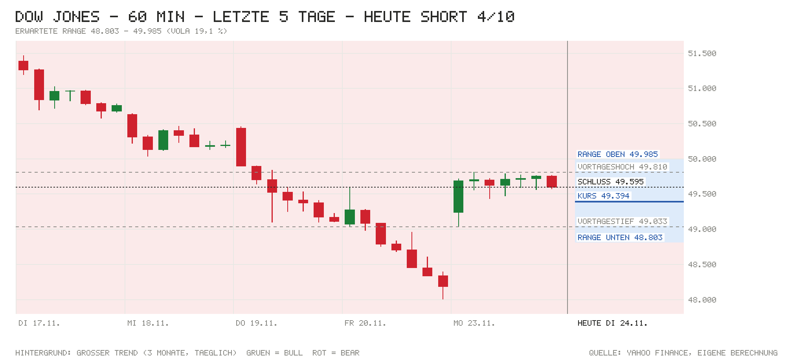

Tagesentscheidung ab 15:32 bis 22:00 Uhr
Nach dem +3-%-Tag kommt der Test: Nvidia fällt 5,5 %, Chipwerte und Nasdaq 100 (−2,1 %) geben deutlich nach. Der Dow eröffnet 0,2 % tiefer und rutscht weiter auf 49.394. Die Eröffnung ist bisher das Tageshoch, Europa dreht ins Minus, die Fed-Erhöhung im Dezember ist voll eingepreist, und der große Trend steht auf Bear. Gegenargumente: Der Dow hält sich deutlich besser als S&P und Nasdaq, Defensive wie Amgen, Walmart und P&G steigen, und die hohen Short-Positionen der Hebel-Fonds können jederzeit Eindeckungen auslösen. Darum nur leicht Short (eigene Einschätzung).
- Kurs um 15:32
- 49.394
- Erwartete Range
- 48.803 – 49.985
- Eingepreist (Tagesoption)
- ±1,20 %
Einschätzung vom Kurs um 15:32 bis zum US-Schluss. Range = ±1 σ für die restliche Handelszeit aus der S&P-500-Tagesoption, auf den Dow umgerechnet (ca. 68 %). Keine Anlageberatung.
Chart

Signale
| Signal | Wirkung | Stand und Einordnung |
|---|---|---|
| Eröffnung & erste Minuten | Gegenwind | Eröffnung 49.495 (Lücke −0,20 %), jetzt 49.394 (−0,2 % seit Eröffnung), Hoch/Tief bisher 49.495/49.294. Die Eröffnung ist das Hoch. |
| Schwergewichte heute | Gegenwind | Alle 30 Werte −168 Pkt. Nvidia −56, Goldman Sachs −55, Caterpillar −36, UnitedHealth −32; Gegenpol Amgen +30. Die Gewinner von gestern geben ab. |
| US-Daten heute | Neutral | Case-Shiller 20 Städte J/J Ist 2,6 % vs. Prognose 2,7 %, FHFA-Hauspreise M/M 0,0 % vs. 0,2 %. Etwas schwächer, kaum marktbewegend. Verbrauchervertrauen um 16:00. |
| Europa & Asien | Gegenwind | DAX −0,94 %, Euro Stoxx 50 −0,84 % (beide nach Eröffnung um null ins Minus gedreht). Nikkei +3,91 % (Nachholen nach Feiertag), Hang Seng −0,73 %, Shanghai +0,27 %. |
| Zinserwartung | Gegenwind | Fed am 9.12.: 101 % für +25 Bp. (impl. 4,13 %), Januar weitere 69 %. Die Fed bleibt auf Straffungskurs. |
| Renditen | Neutral | US 2J 4,66 % (+3 Bp. vs. 4,63 % offiziell 23.11.), 10J 4,90 % (−2 Bp. vs. 4,92 %). Kaum Bewegung. |
| Kreditstress | Neutral | FRED n/v. Ersatz: HYG −0,15 %, LQD −0,05 %. Kein Stress sichtbar. |
| Öl & Dollar | Neutral | WTI 81,22 USD (+1,31 %), Brent 87,90 USD (−1,64 %), EUR/USD 1,0977 (+0,05 %). Kein klares Signal. |
| Trend | Rückenwind | 49.394 klar unter dem 21-Tage- (51.544), 50-Tage- (51.649) und 200-Tage-Schnitt (50.774). Der große Trend steht seit 28.10. auf Bear und passt zu Short. |
| Positionierung | Gegenwind | COT 17.11.: Hebel-Fonds im S&P-Future netto −234.978. Viele Shorts sind Treibstoff für Eindeckungen bei jeder Erholung. |
| Unternehmensnachrichten | Gegenwind | Nvidia gibt nach +31,5 % gestern nach; US-Abgeordnete stellen Huangs Rückkehr infrage, Goldman nennt sie kein „Clearing Event“. Chipwerte breit schwächer. |
| Profi-Sicht | Gegenwind | ING: Dollar womöglich überschossen, aber ein heißer Kern-PCE-Wert am Mittwoch kann die Stärke verlängern. Inflationsrisiko vor der Fed. |
| Termine im Fenster | Neutral | Verbrauchervertrauen und Richmond-Fed-Index 16:00. Kein Zinsentscheid; PCE-Inflation erst morgen. |
Dow-Werte heute
| Aktie | Heute | Beitrag |
|---|---|---|
| Nvidia | −5,52 % | −56 Pkt. |
| Goldman Sachs | −1,10 % | −55 Pkt. |
| Caterpillar | −1,06 % | −36 Pkt. |
| UnitedHealth | −1,55 % | −32 Pkt. |
| Amgen | +1,10 % | +30 Pkt. |
| Amazon | −1,13 % | −18 Pkt. |
| Apple | −0,62 % | −13 Pkt. |
| Cisco | −2,10 % | −12 Pkt. |
| Summe aller 30 Werte | −168 Pkt. |
Beitrag = Kursänderung seit gestern ÷ Dow-Divisor (aus den Kursen berechnet, 0,1635). Laufende Kurse von Yahoo, bis zu 15 Minuten verzögert. Die Dow-Liste im Skript hat den Stand Nov. 2024.
Großer Trend (3-Monats-Momentum)
- Stand
- Bear
- Seit
- 28.10. (5 Wechsel in 3 Monaten)
- Schluss 23.11.
- −7,43 % vs. Zins +1,00 %
- Heute dreht es bei Schluss über
- 53.998 (jetzt −8,50 %)
Auch mit dem Kurs von jetzt bliebe das Signal Bear. Bull = Rendite der letzten 3 Monate über dem Geldmarktzins, Bear = darunter. Regel: Rendite der letzten 63 Handelstage (≈ 3 Monate) gegen die 13-Wochen-T-Bill (^IRX, jetzt 4,17 %), jeden Tag zum Schluss neu entschieden, Zeitrahmen Tageskerzen (nach Antonacci 2014, dort monatlich über 12 Monate; täglich entschieden dreht es öfter falsch). Keine Anlageberatung.
Bilanz der letzten Entscheidung
23.11.: Long mit 4/10 ab 49.307. Die Richtung war richtig: Schluss 49.595, +288 Punkte in Richtung der Einschätzung (Hoch 49.810, Tief 49.033). Die Range von ±848 wurde getroffen. Gesamt seit Start: 13 Einschätzungen, Richtung 62 % richtig, Summe +278 Punkte bis Schluss (Schnitt +21). Range bisher an 46 % der 13 Tage getroffen (Soll ca. 68 %).
Marktlage
| Markt | Stand | Veränderung |
|---|---|---|
| Dow Jones (Schluss 23.11.) | 49.595,31 | ca. +3,0 % |
| Dow (Eröffnung heute) | 49.494,60 | −0,20 % |
| Dow (jetzt, Kurs zur Notiz 15:32) | 49.394 | −0,41 % |
| S&P 500 | 7.143,56 | −1,29 % |
| Nasdaq 100 | 26.187,11 | −2,09 % |
| US-Futures (S&P / Nasdaq) | 7.171,00 / 26.270,00 | −1,15 % / −2,01 % |
| DAX (aktuell) | 25.098,00 | −0,94 % |
| Euro Stoxx 50 (aktuell) | 6.023,71 | −0,84 % |
| EUR/USD | 1,0977 | +0,05 % |
| WTI (USD/Barrel) | 81,22 | +1,31 % |
| Brent (USD/Barrel) | 87,90 | −1,64 % |
| Gold (USD/Unze) | 3.615,70 | −0,98 % |
| VIX | 29,15 | +9,50 % |
| VXD (Schluss 23.11.) | 21,88 | −20,78 % |
Stände von 15:33 Uhr (Yahoo, bis 15 Min. verzögert). Dow-Plus gestern laut Yahoo-Marktbericht rund 3 %; S&P 500 +4,73 %, Nasdaq Composite +6,51 %, der stärkste Tag seit April 2025. WTI und Brent beziehen sich auf unterschiedliche Vortagesstände. Steigendes Öl und steigende Volatilität rot, fallende grün.
Anleihen & Zinsen
| Kennzahl | Stand | Veränderung |
|---|---|---|
| US-Treasury 2J (live) | 4,66 % | +3 Bp. (vs. 4,63 % offiziell 23.11.) |
| US-Treasury 10J (live) | 4,90 % | −2 Bp. (vs. 4,92 %) |
| Fed nächste Sitzung (9.12.) | 101 % für +25 Bp. (impl. 4,13 %) | Erhöhung voll eingepreist |
| Fed-Zielband | 3,75–4,00 % (EFFR 3,88 %) | zuletzt +25 Bp. am 17.9. |
| US-Hochzins (HYG, Ersatz) | 76,41 USD | −0,15 % heute |
| Investment Grade (LQD, Ersatz) | 103,88 USD | −0,05 % heute |
Die Risikoaufschläge von FRED lagen nicht vor, daher die Anleihe-ETFs HYG und LQD als Ersatz (nur Tagesveränderung, Wochenwert n/v). US-Live-Kurve Stand 15:33 Uhr. Offizielle 10J vor einer Woche: 5,12 %.
Termine heute (deutsche Zeit)
- 14:15 USA: ADP-Beschäftigung wöchentlich – Ist 21.000 (zuvor 23.800)
- 15:00 USA: FHFA-Hauspreise M/M – Ist 0,0 % vs. Prognose 0,2 %; Case-Shiller 20 Städte J/J – Ist 2,6 % vs. Prognose 2,7 %
- 15:30 Eröffnung der Wall Street
- 16:00 USA: Verbrauchervertrauen (Conference Board) – Prognose 92,4 (zuvor 91,7); Richmond-Fed-Industrieindex – Prognose −2 (zuvor −2)
- 22:00 US-Börsenschluss. Keine Quartalszahlen von Dow-Werten im Kalender.
- 22:30 API-Rohöllager – Prognose +0,9 Mio. Barrel. Morgen: Kern-PCE für Oktober.
Nachrichten zu Dow-Werten
- Nvidia: −5,52 % nach dem Rekordsprung von +31,5 % (Schluss 165,05 USD) auf Huangs Rückkehr. US-Abgeordnete stellen die Rückkehr infrage, Senator Cotton drängt auf den Chip Security Act; Goldman Sachs sieht in der Rückkehr kein „Clearing Event“, Raymond James: „Nvidia does not get a do-over“. Einschätzung: negativ, die Erholung wird getestet.
- Chipwerte (Cisco, Amazon, Apple): AMD, Broadcom, Micron und Intel fallen vorbörslich teils über 6 %, der KI-Handel steht wieder unter Druck. Einschätzung: belastet den Dow weniger als die Nasdaq.
- Goldman Sachs, Caterpillar: −55 und −36 Pkt. nach +4,2 % bzw. +7,2 % gestern. Eigene Meldung fand sich nicht. Einschätzung (ohne Quelle): Gewinnmitnahmen in den KI-nahen Zyklikern.
- UnitedHealth: −1,55 %, der Druck durch den Medicare-Advantage-Entwurf der Gesundheitsbehörde CMS hält an. Einschätzung: weiter negativ.
- Amgen, Walmart, P&G: leicht fester (+30, +7, +6 Pkt.). Einschätzung (ohne Quelle): Umschichtung in Defensive stützt den Dow gegenüber der Nasdaq.
Profi-Sicht & Positionierung
- ING THINK: Das FX Daily („Dollar may be heading into overshoot territory“) sieht den Dollar nach dem Tech-getriebenen Anstieg am Widerstand; ein heißer Kern-PCE-Wert am Mittwoch könne die Stärke aber verlängern, eine nachhaltige Wende sei eher mit Fed (9.12.) und Verbraucherpreisen (10.12.) zu erwarten.
- Positionierung (COT, Stand 17.11.): Hebel-Fonds im S&P-Future netto −234.978 Kontrakte (Short-Abbau um 68.082), Vermögensverwalter netto +895.049. In 10J-Treasuries bauen Hebel-Fonds ihre Short-Position auf −2,48 Mio. aus.
Quellen
- Marktdaten (Skript
marktdaten.mjs): Yahoo Finance (Kurse, Dow-Werte, VXD, ^IRX), Nasdaq (Kalender, Optionskette SPY), US-Live-Kurve, Bundesbank, U.S. Treasury, Fed-Pfad über Amber Terminal, CFTC, ING THINK - Yahoo Finance: Dow, S&P 500, Nasdaq fall as chip stocks tumble
- Investing.com: Nvidia stock falls 5% premarket; Goldman says Huang’s return not a clearing event
- Investing.com: U.S. chip stocks fall premarket after Nvidia-led rally
- Invezz: Why is Nvidia stock plunging 5% a day after its comeback?
- Börse Social: Caterpillar, Goldman Sachs, UnitedHealth im Dow (23.11.)
- ING THINK: FX Daily – Dollar may be heading into overshoot territory